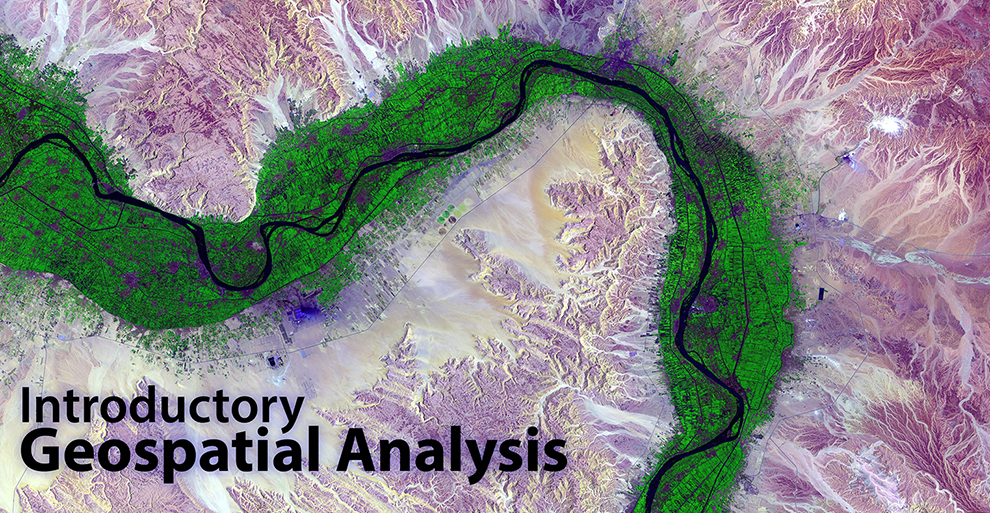
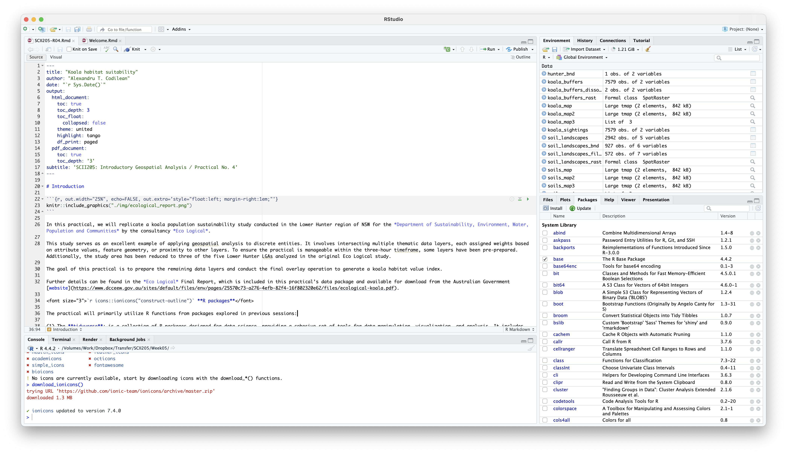
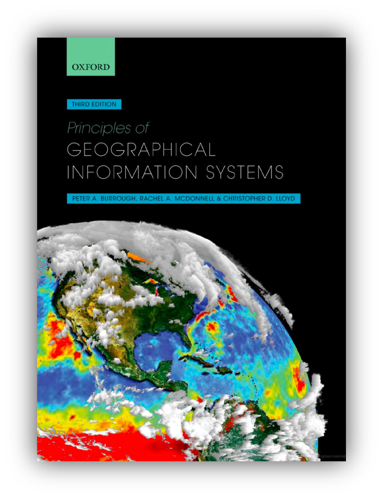
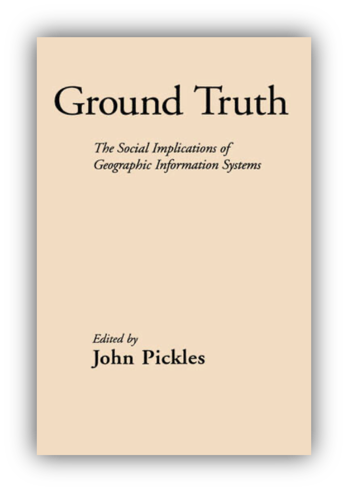
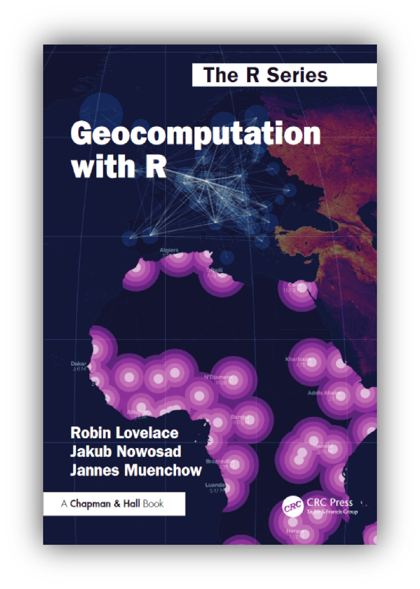

Welcome

Welcome to the online home for Introductory Geospatial Analysis. This course offers a comprehensive introduction to the theory and practice of Geographic Information Systems (GIS) and geospatial analysis, equipping students with essential skills for solving fundamental geospatial problems.
At the core of this course are hands-on practical exercises built around the R statistical language, enabling students to develop and apply key geo-analytical skills. Using a problem-based learning approach, students will work both individually and collaboratively to tackle real-world geospatial challenges with open-source tools and technologies.
A Quick Guide to R and RStudio
R is a powerful programming language widely used for statistical computing, data analysis, and visualization. RStudio is an integrated development environment (IDE) that makes using R more efficient with a user-friendly interface, syntax highlighting, and tools for managing projects. Together, they provide a robust ecosystem for data science and statistical modeling. R’s vast collection of packages enables users to perform tasks ranging from basic calculations to advanced machine learning applications.

To download R, visit the Comprehensive R Archive Network (CRAN) at https://cran.r-project.org, choose a mirror near you, and download the installer that matches your operating system. Run the installer and follow the setup instructions provided on-screen.
Before installing RStudio, ensure that R is already installed on your system. Then, navigate to https://rstudio.com/products/rstudio/download, download the free version of RStudio Desktop that corresponds to your operating system, and run the installer following the on-screen prompts.
You can install additional packages using
install.packages("package_name")in the console and load them withlibrary(package_name).
Seeking Help in R
Access Help Pages:
Use thehelp()function or the?operator to pull up documentation for a specific function or package.Search for Topics:
Usehelp.search("keyword")to search the help system for topics related to your keyword, orapropos("keyword")to list objects matching the keyword in their names.Viewing Package Documentation:
For comprehensive documentation of a package, load the package and use:help(package = "packageName")Explore Vignettes:
Many packages include detailed vignettes (long-form guides) that explain their functionality. Access them using:browseVignettes("packageName").R Manuals:
The base R manuals are available online or via your local installation. These include the An Introduction to R guide which is ideal for beginners. You can also visit CRAN to access a variety of manuals and guides.
Resources for this course

Principles of Geographical Information
Systems, Third Edition
Full reference: Burrough, P. A., McDonnell, R. A., & Lloyd, C. D. (2015). Principles of Geographical Information Systems (3rd ed.). Oxford University Press. ISBN: 978-0-19-874284-5.
Principles of Geographical Information Systems offers a comprehensive
exploration of both the theoretical foundations and practical
applications of GIS. The book delves into spatial data models, analysis
techniques, and the computational algorithms that underpin geospatial
problem solving.

Ground Truth: The Social Implications of Geographic Information Systems
Full reference: Pickles, J. (Ed.). (1995). Ground Truth: The Social Implications of Geographic Information Systems. New York: Guilford Press. ISBN: 978-0898622959.
Ground Truth explores the broader societal, political, and ethical impacts of GIS technology. The book critically examines how GIS shapes knowledge production, power dynamics, and decision-making, questioning its role in reinforcing existing social inequalities. Published in 1995, it remains a foundational text in critical GIS studies, highlighting the intersection of geography, technology, and society.

Geocomputation with R
Full reference: Lovelace, R., Nowosad, J., & Muenchow, J. (2025). Geocomputation with R (2nd ed.). CRC Press. ISBN: 978-1032248882.
Geocomputation with R is a practical and comprehensive guide to using the R programming language for geospatial analysis and modeling. The book covers key geocomputational techniques, including spatial data handling, visualization, and analysis, leveraging R’s powerful ecosystem. Designed for both beginners and advanced users, it provides hands-on examples and workflows to solve real-world geographic problems using open-source tools. Download the book here.

The material on this website is licensed under a Creative Commons BY-NC-SA 4.0 International License.

The code samples on this website are licensed under a Creative Commons CC0 1.0 Universal License.